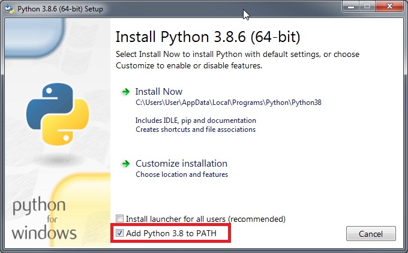
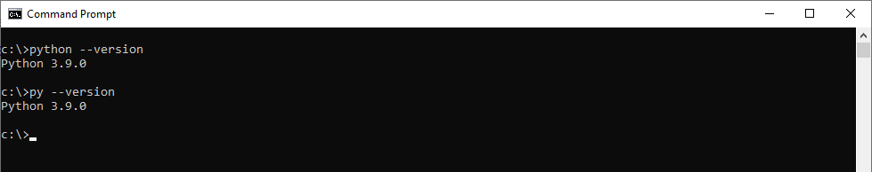
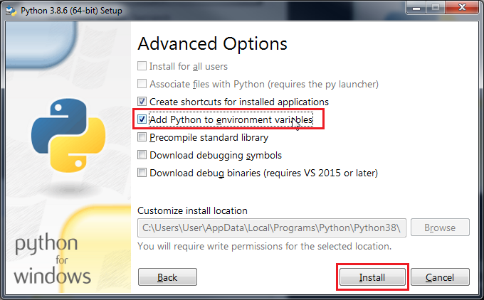
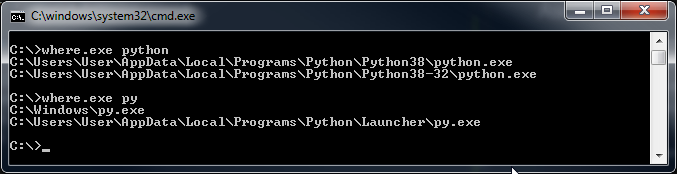

2_Pythonin_asennus
Jotta python koodi saadaan tulkattua tietokoneen ymmärtämään muotoon tarvitaan Python tulkki joka löytyy Python asennuksesta. Oppassa tulen käyttämään Pythonin versiota 3.8.6.
Asiat jota opas käsittelee tuskin muuttuvat merkittävästi joten voit halutessasi käyttää myös uudempaa versiota. Python asennustiedoston voi ladata eri käyttöjärjestelmille suoraan Pythonin kotisivulta https://www.python.org/.
Python asennus - Windows
Lataa python asennustiedosto Pythonin sivuilta ja kaksoisklikkaa lataamaasi python-3.x.x.exe asennustiedostoa. Windows saattaa kysyä “haluatko suorittaa tämän tiedoston?” johon vastaa suorita. Tämän jälkeen pitäisi näkyä allaoleva ikkuna.
Rastita kohta Add Python <versio> to Path ja paina Install Now.

Tämän jälkeen ohjelman pitäisi asentaa Python koneellesi ja lisätä Python.exe tiedostopolun automaattisesti Windowsin Path ympäristömuuttujaan joka mahdollistaa Pythonin ajamista komentoriviltä.
Asennuksen testaus
Avaa komentorivisovellus kuten cmd, powershell tai Windows Terminal ja kirjoita siihen seuraava komento ja paina enter. Tämän pitäisi tulostaa asennettu python versio komentoriville. Jos versio vastaa versiota jonka asensit voi tästä päätellä että asennus ja pythonin lisääminen PATH ympäristömuuttujaan on onnistunut.
python --version
Voit kokeilla myös seuraavilla komennoilla sillä välillä Python tulee esiasennettuna tietokoneelle tai jonkun muun sovelluksen mukana.
py --version
python3 --version

Mikäli kaikki toimii tähän mennessä voit jatkaa seuraavaan osioon. Ongelmatilanteissa voit katsoa josko ratkaisu löytyy alhaalta.
Yleisiä ongelmatilanteita - Windows
Python komentoa ei tunnisteta
Mikäli asennuksen jälkeen python –version komento tulostaa seuraavan virhesanoman, tarkoittaa tämä että Pythonia ei löydy Path ympäristömuuttujasta.
Komentoa python ei tunnistettu sisäiseksi tai ulkoiseksi komennoksi, suoritettavaksi ohjelmaksi tai komentojonotiedostoksi.
python is not recognized as an internal or external command, operable program or batch file.
Todennäköisesti unohdit rastittaa asennuksen yhteydessä kohdan Add Python <versio> to Path. Tämän lisääminen onnistuu kuitenkin jälkikäteen ajamalla python-3.x.x.exe asennustiedosto uudestaan ja valitsemalla modify. Modify osiossa paina next ja valitse advanced options kohdasta Add Python to environment variables ja install.

Vaihtoehtoisesti voit käydä muokkaamassa PATH ympäristömuuttujaa käsin. Ohje tähän löytyy osiosta Windows - Python ympäristömuuttujan lisäys.
Python komento avaa Python sivun Windows Store kauppapaikalta
Microsoft on päättänyt jostain syystä lisätä Python ja Python3 komennoille aliakset jotka avaavat Windows Store kauppasivun pythonille kun komennot kirjoitetaan. Nämä saa pois päältä hakemalla käynnistä valikosta “App execution aliases” asetuksia. Ikkunassa säädä App Installer python.exe ja python3.exe valinnat pois päältä.
Python komenon versio on eri kuin asennettu
Koneelle on todennäköisesti asennettu eri versio Pythonista jo aikaisemmin. Tämän asennuksen sijainnin saa selville komentoriviltä Windowsin where.exe sovelluksen avulla.
where.exe python

Tässä tilanteessa voit:
- Poistaa vanhan version lisää ja poista sovelluksen avulla.
- Muokata käsin PATH ympäristömuuttujaa poistamalla siitä polun vanhaan python versioon.
- Muokata käsin PATH ympäristömuuttujaa listaamalla uuden Python version ennen vanhaa Python versiota.
- Käyttää vanhempaa versiota mikäli se ei ole kovin paljoa vanhempi.
Lisää tietoa ympäristömuuttujista löytää Windows - Python ympäristömuuttujan lisäys osiossa.